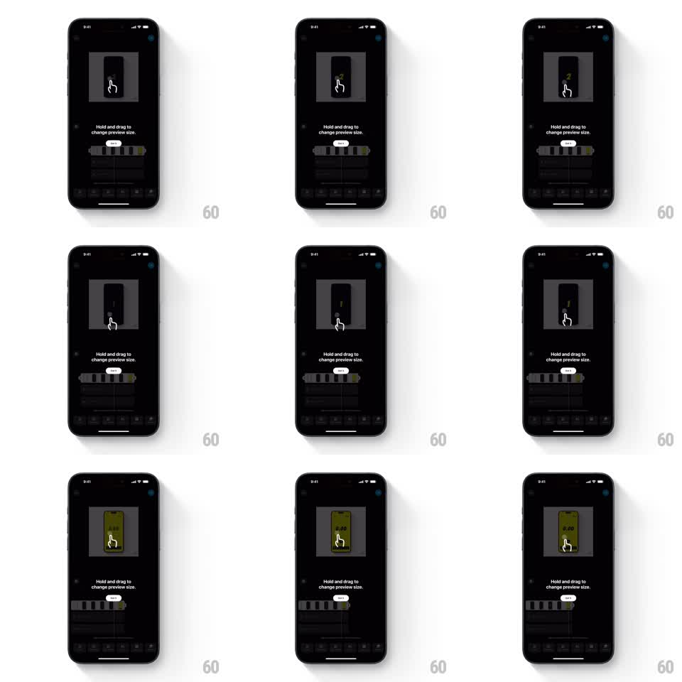

Media
Frame-by-frame

Rebuild this interaction 1:1: Instagram's video-editor coach mark - a dark overlay card with an animated hand-drag illustration teaching "Hold and drag to change preview size," which fades and scales away when dismissed.

Rebuild this interaction 1:1: Instagram's video-editor coach mark - a dark overlay card with an animated hand-drag illustration teaching "Hold and drag to change preview size," which fades and scales away when dismissed. ## Integration Integration: stack-agnostic spec - springs given as stiffness/damping, timed motions as duration + curve; map every value to your framework and animation library of choice. ## Scene The video editor: gray preview stage top, timeline strip and tool rows below, all dimmed. Centered over the stage: a coach-mark card with a looping gesture illustration - a hand pointer holding and dragging on a mini phone frame while a yellow fill shows the preview resizing - plus the caption "Hold and drag to change preview size" and a Skip button. ## Motion spec Pattern: looping gesture-demo coach mark. - The card fades in and scales from 0.92 to 1.0 (250ms, ease-out) when the editor first opens. - The illustration loops continuously (~1.6s per loop): the hand presses (small scale dip), drags horizontally, the mini preview's yellow area resizes 1:1 with the drag, then a 300ms pause and the loop restarts. - The editor chrome behind stays dimmed and inert while the card is up. - Dismiss (Skip or tap the card): the card scales to 0.9 and fades out (200ms, ease-in), and the editor undims at the same time. ## Calibration - The loop's pause at the end is what makes it readable; without it the gesture blurs into noise. - The yellow resize fill must track the hand 1:1 - lagging breaks the teaching moment. ## Reduced motion Show the illustration's end state statically; card dismissal is a plain fade. ## Don't miss - The coach mark is one card: illustration, caption, and Skip move together. - Undim the editor with the dismissal, not after - the user should land on a ready editor.